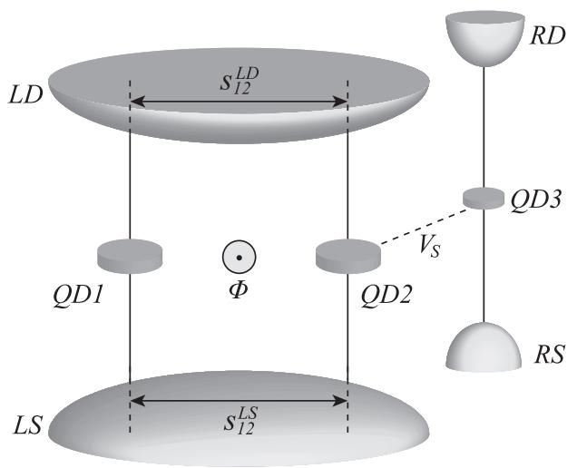
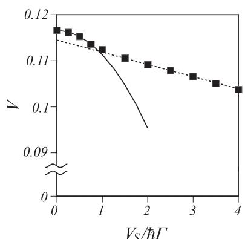
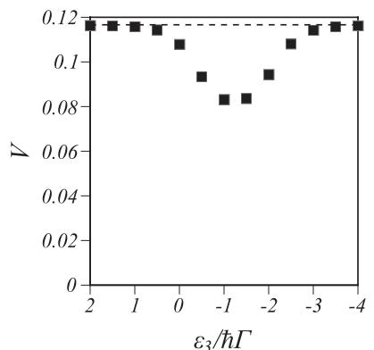

物理图像：传感器即 which-path 探测器
AB 干涉仪里电子可以从上下两条路径穿过各自的量子点（QD1、QD2）后在漏极相干叠加，磁通 调制其相对相位。把一只量子点传感器（QD3）电容耦合到其中一条路径：电子走这条路径时传感器上的静电能改变，传感器的电荷态因此携带”电子走了哪条路”的信息——路径可区分性与干涉可见度此消彼长。这就是QPC 电荷传感器与单电子晶体管共享的互补性根源：传感与退相干是同一枚硬币的两面，传感耦合越强，读出越快，对被测系统相干性的侵蚀也越重。
模型采用标准隧穿哈密顿量：双量子点各自连接源漏两个储库，储库中电子的传播（传播长度 ，）提供两点间经由储库的相干间接耦合，其强度用参数 刻画——本文专门研究间接耦合有限（非最大）的一般情形，对应多数实验条件。传感器 QD3 经库仑作用 耦合到 QD2，自身也连接偏压为 的储库。

系统示意：AB 干涉仪中双量子点 QD1/QD2 各连源漏储库，QD3 电容耦合到 QD2 作电荷传感器；储库内电子传播（长度 s₁₂^ν）提供两点间的相干间接耦合，V_S 是传感库仑作用，Φ 为穿过环的磁通。图源：Kubo et al. (2010), Fig. 1。理论方法：插值二阶非平衡微扰
输运量由非平衡格林函数（Schwinger–Keldysh 形式）计算，传感库仑作用以插值二阶微扰处理：自能在弱耦合区展开到二阶、同时通过插值构造在 极限收敛到正确的原子极限——兼顾两个极限的内插方案。被测 DQD 的电荷态与传感器电荷态由此非微扰地纠缠：干涉路径上积累的相对相位被传感器电荷涨落随机化，AB 振荡的幅度衰减。
定量量度是可见度：
其中 、 是线性电导在磁通 （相长）与 （相消）处的极值、 为整数。 对应完全相干， 对应路径完全可区分。
标度律：从抛物线到线性
数值结果给出可见度随传感强度的干净标度——以被测点的能级展宽 为分界：
- 弱传感区（）：可见度随 抛物线下降；
- 强传感区（）：下降转为线性。
耦合到传感器路径的弛豫率 （自能的虚部， 是二阶推迟自能、取零频率）遵循完全相同的双区标度——可见度损失与弛豫率由同一微观机制驱动（线性区的解析起源在文中留为开放问题）。

可见度随传感库仑作用 V_S 的标度：V_S<ħΓ 沿抛物线（实线拟合）下降，V_S>ħΓ 转为线性（虚线拟合）——路径可区分性随传感强度单调上升，交叉点在被测点的能级展宽处。图源：Kubo et al. (2010), Fig. 3(b)。传感器工作点与偏压的调制
能级失谐依赖：扫描传感器能级 时，可见度呈现单凹陷结构——凹陷最低点正对传感器电导峰（占据涨落最剧烈处，which-path 信息获取最快），远离凹陷则可见度回到无传感耦合的渐近值。传感器的”破坏力”不均匀：把它偏置在电导峰侧的陡坡上读电荷最快，但那也正是它最伤相干的工作点。

可见度随传感器能级 ε₃ 的单凹陷结构（V_S/ħΓ=2.5）：凹陷底正对传感器的电导峰/占据涨落最大处，远离峰值处可见度回到无传感耦合值（虚线）。图源：Kubo et al. (2010), Fig. 4(a)。偏压依赖与机制判别：给传感器加源漏偏压 ，可见度随偏压呈三区行为—— 近常数、 抛物线、 线性。对比 QPC 传感器的已知结果（交叉点在 而非 ），可见QD 与 QPC 两类传感器的退相干机制本质不同：量子点传感器的能标由被测系统的隧穿展宽设定，QPC 则由温度设定——这是选择传感器与设计工作点时必须区分的物理。
适用条件与边界
- 理论范围：无自旋电子、聚焦相干电荷输运；传感器中的多体关联（有限偏压下的散粒噪声结构）未纳入。
- 对量子比特读出的启示：可见度–传感强度标度给出”灵敏度换相干”的定量汇率；单发读出与快速读出追求强耦合，而需要保护被测态相干性的场合（如弱测量的连续跟踪）应把传感器偏置在凹陷之外的能级、以弱耦合长时间积累信噪比。
- 与射频反作用的区别：本词条讨论的是传感耦合本身的量子反作用（信息获取导致的退相干），与射频反射测量中过高载波功率注入散粒噪声的经典反作用是两个不同的通道，二者需分别优化。
- 相干间接耦合：结论适用于有限的储库介导间接耦合（一般实验条件）；最大间接耦合的极限情形是特例。
与其他概念的关系
- QPC 电荷传感器与单电子晶体管：两大邻位传感家族的”仅电容耦合、不直接隧穿”设计原则同时限定了反作用的类型——库仑型 which-path 退相干；两类传感器的退相干能标不同（ħΓ vs k_BT）。
- 自旋退相干：传感反作用是读出链引入的额外退相干通道，与器件本征噪声（电荷噪声、超精细）并列进入退相干预算。
- 双量子点：被测系统即隧穿耦合双点，储库介导的相干间接耦合是其输运物理的组成部分。
- 单发读出：追求高信噪比意味着强传感耦合，可见度标度给出其相干代价的定量参照。
- 栅极射频传感与色散读出：非破坏性读出路线的设计目标正是把反作用压到量子极限以下，与本题的互补性约束形成对照。
- 射频反射测量：载波功率的经典反作用通道，与本词条的量子反作用相互独立。
参考文献
- Kubo, T., Tokura, Y., Tarucha, S. Dephasing in an Aharonov-Bohm interferometer containing a lateral double quantum dot induced by coupling with a quantum dot charge sensor. Journal of Physics A: Mathematical and Theoretical 43, 354020 (2010). DOI: 10.1088/1751-8113/43/35/354020；arXiv:1005.2226（QAtlas 缓存：1005.2226）。
完整文献库（含各篇站内全文页）见 参考文献库。